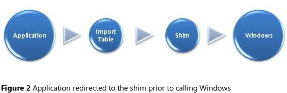

Microsoft Windows Application Compatibility Infrastructure (Shim Infrastructure).
The Shim Infrastructure implements a form of application programming interface (API) hooking. Specifically, it leaverages the nature of linking to redirect API calls from Windows itself to alternative code - the shim itself. The Windows Portable Executable (PE) and Common Object Format (COFF) Specification includes several headers, and the data directories in this header provide a layer of indirection between the application and the linked file.
Specifically, you can modify the address of the Windows function resolved in the import table, and then replace it with a pointer to a function in the alternate shim code.

Application redirected to the shim prior to calling Windows, the code that runs inside a shim stil sits outside Windows. Consequently, Windows holds shim code to the same security restrictions as the application code itself. In fact, to Windows, the shim code appears to be application code. As a result, you cannot use shims to bypass any security mechanisms present in Windows. For example, no shim is available to bypass the Winodws 8 user Account Control (UAC) prompts while still running the application with elevated permissions. You can shim the application not to require administrator rights, or you can shim it to demand it, but in order to receive administrator rights with UAC enabled, the user will have to approve the elevation. The same is true for code that you write yourself.
Because the Shim infrastructure, in essence, injects additional code into the application before it calls into Windows, any mitigation you can use a shim to accomplish can be done by modifying the application code itself. At a minimum, the application could include code similar to what Windows implements in the shim immediately prior to calling into Windows APIs.